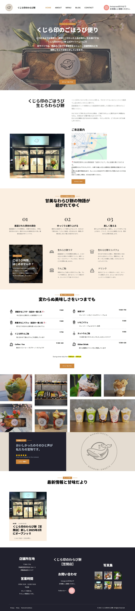
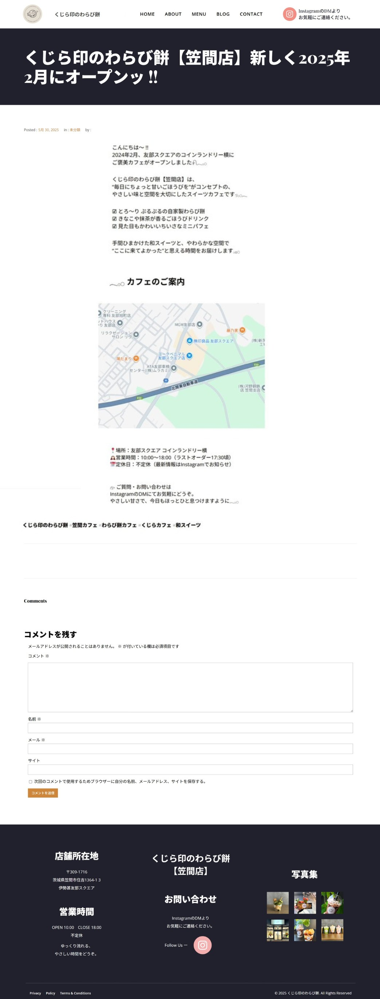
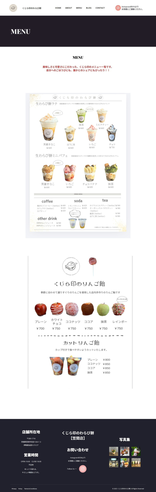
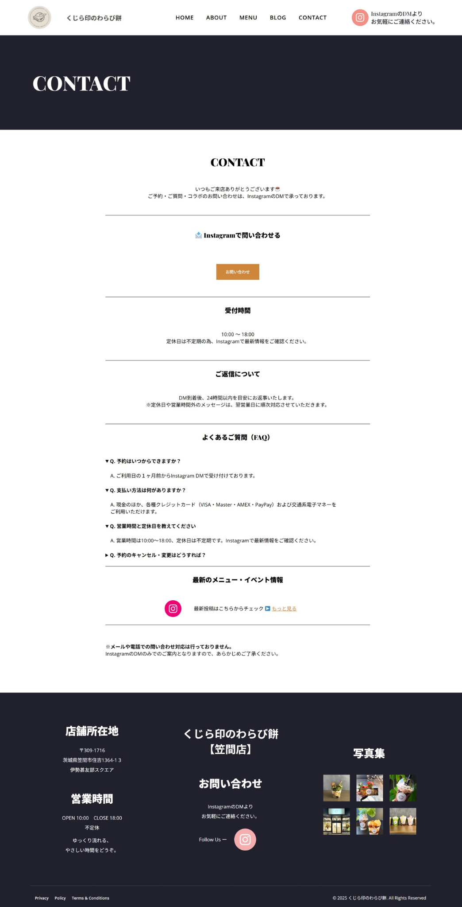

くじら印のごほうび便り
こちらは、とろける食感が自慢の"生わらび餅"専門店「くじら印のわらび餅」の紹介サイトです。
素朴で上品な甘さのわらび餅と、シャリっとしたりんご飴など、季節の甘味をごほうび感たっぷりに提供。
和紅茶や挽きたてコーヒーとともに、心ほどけるひとときをお楽しみいただけます。
店内の雰囲気やメニュー情報も掲載しています。
【制作サイトに関するご案内】
こちらのサイトは以前、WordPressにて実装しておりましたが、現在、動作確認用のURLが利用できず、リンク切れの状態となっております。
つきましては、サイトの設計、デザイン、そしてコンテンツの内容を把握していただけるよう、
実際の画面のスクリーンショットを掲載しております。



